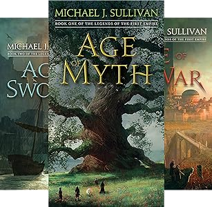
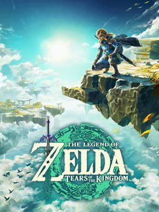

Recent Reads:
- Babel by R. F. Kuang
- Every Heart A Doorway by Seanan McGuire
- Down Among the Sticks and Bones by Seanan McGuire
- Beneath the Sugar Sky by Seanan McGuire
- Grokking Algorithms by Aditya Bhargava
- Age of Myth by Michael J. Sullivan
- Age of Swords by Michael J. Sullivan
- Age of War by Michael J. Sullivan
- Age of Legends by Michael J. Sullivan
- Age of Death by Michael J. Sullivan
- Age of Empyre by Michael J. Sullivan
Recent Games:
- God of War Ragnarök
- Legend of Zelda: Tears of the Kingdom
- Legend of Zelda: A Link to the Past
- DREDGE
- Alan Wake
- Control: AWE
- Baldur's Gate 3 (in progress)
- Alan Wake 2
Favorites of 2023 - Books
This was a good year for reading. Every book I committed to ended up being somewhere between good and great. That said, Michael J. Sullivan's "Legends of the First Empire" series was definitely my favorite read of 2023.
Favorites of 2023 - Games
I have a harder time getting into games than I do books, but 2023 was a strong year on the gaming front as well. The Game of the Year Awards
will have a lot of great titles to choose from this year, but for me personally, Legend of Zelda: Tears of the Kingdom was definitely my most
memorable gaming project. I suspect Baldur's Gate 3 might end up de-throning Tears of the Kingdom, but I haven't gotten far enough into that one to say yet.

Book Data
| Title | Page Count | Audio Book Length | Kindle Price | My Rating |
| Babel | 557 | 21 hours 57 minutes | $15.99 | 5/5 |
| Every Heart A Doorway | 174 | 4 hours 44 minutes | $8.99 | 4/5 |
| Down Among the Sticks and Bones | 190 | 4 hours and 4 minutes | $11.99 | 3/5 |
| Beneath the Sugar Sky | 157 | 4 hours and 11 minutes | $11.99 | 3/5 |
| Age of Myth | 413 | 11 hours and 26 minutes | $9.99 | 4/5 |
| Age of Swords | 504 | 14 hours and 2 minutes | $9.99 | 4/5 |
| Age of War | 424 | 16 hours and 47 minutes | $9.99 | 4/5 |
| Age of Legends | 350 | 14 hours and 35 minutes | $9.24 | 5/5 |
| Age of Death | 312 | 14 hours and 35 minutes | $9.24 | 5/5 |
| Age of Empyre | 369 | 16 hours and 42 minutes | $9.89 | 4/5 |